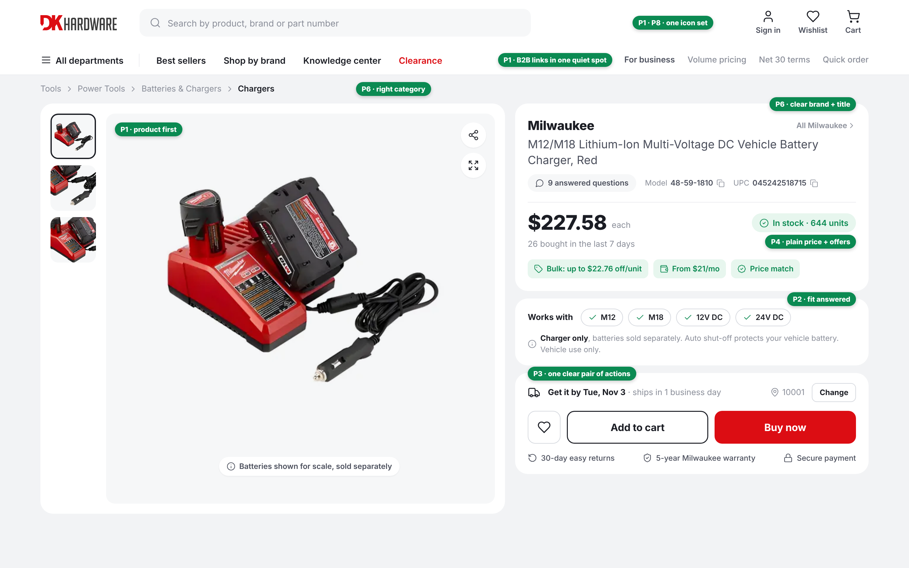
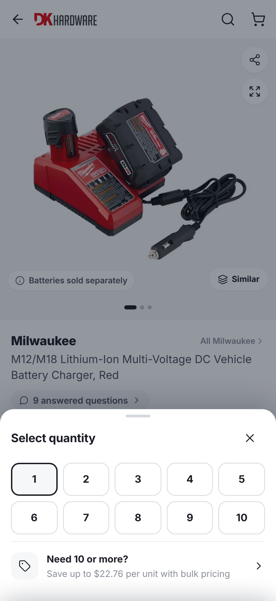
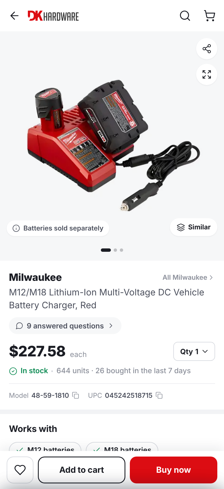
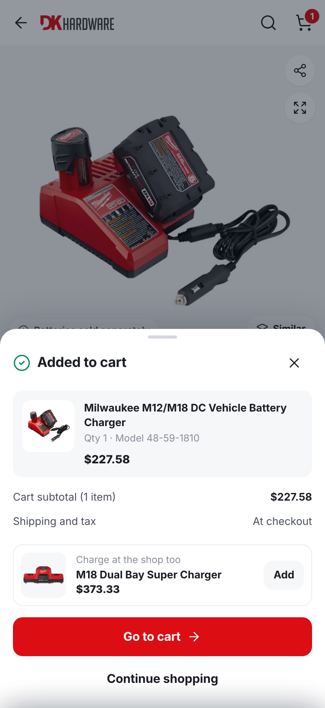
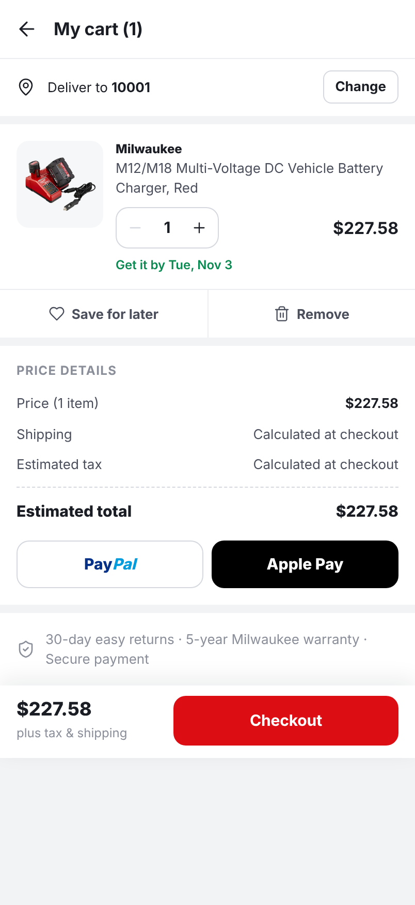

Full-bleed photo right under a three-icon header. Promo ticker, tab bar, call bubble and B2B bar leave the first screen.
Fixes P1 · P8"Works with" chips and a "charger only" note come straight after the price. One clean spec set replaces 33 conflicting rows.
Fixes P2 · P7A sticky bar with Add to cart and Buy now that turns into "Go to cart". Every B2B tool lives behind one row.
Fixes P3Plain price, one "Offers for you" list, and a ZIP-based "Get it by Tue, Nov 3" with returns and warranty beside it.
Fixes P4Real data only: product reviews and store rating labelled apart, 9 answered questions surfaced, Milwaukee as the one brand.
Fixes P5 · P6White cards on grey bands, as on Myntra and Flipkart. Inter, Lucide icons, and DK red only on the strongest action.
Fixes P8
| Task 1 problem → what changed | |
|---|---|
| P1 | Product buriedOne nav row; photo and buy box share the first view |
| P2 | Fit unclear"Works with" chips + "charger only" note under the price |
| P3 | Competing actionsWishlist, Add to cart, Buy now; B2B links grouped in the nav |
| P4 | Cost and deliveryPlain price, three offer chips, delivery date above the buttons |
| P5 | Misleading reviews"9 answered questions" instead of borrowed stars |
| P6 | Category and brandCorrect breadcrumb, Milwaukee first, no SKU in the title |
| P7 | NoiseInternal fields and duplicates removed from specs and Q&A |
| P8 | InconsistencyOne icon set, three button styles, one accent |



